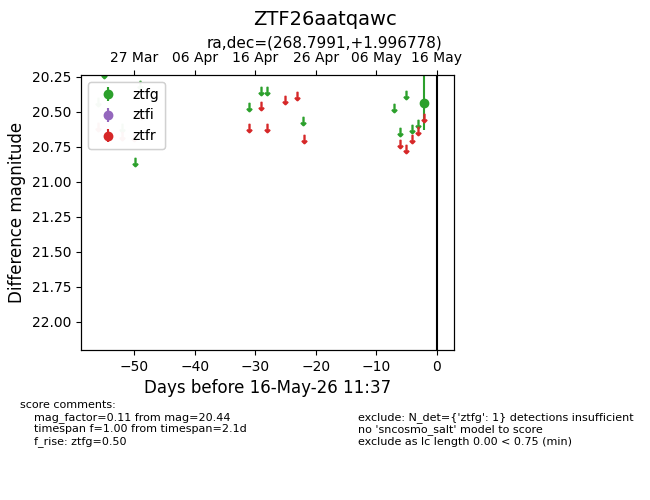
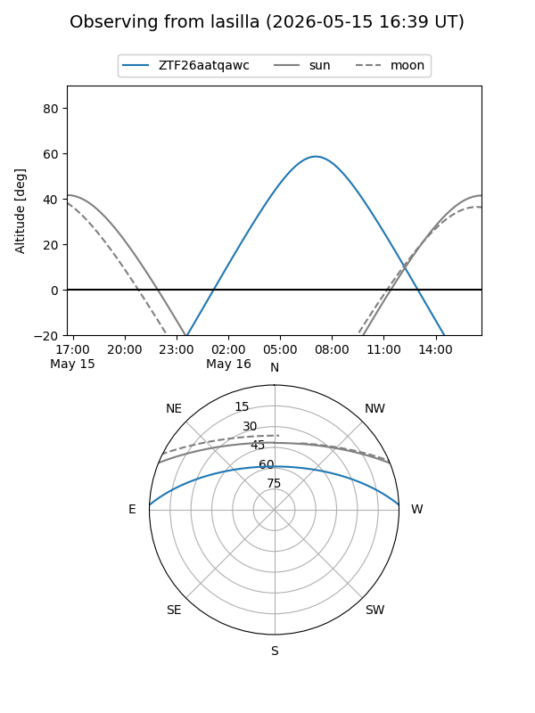
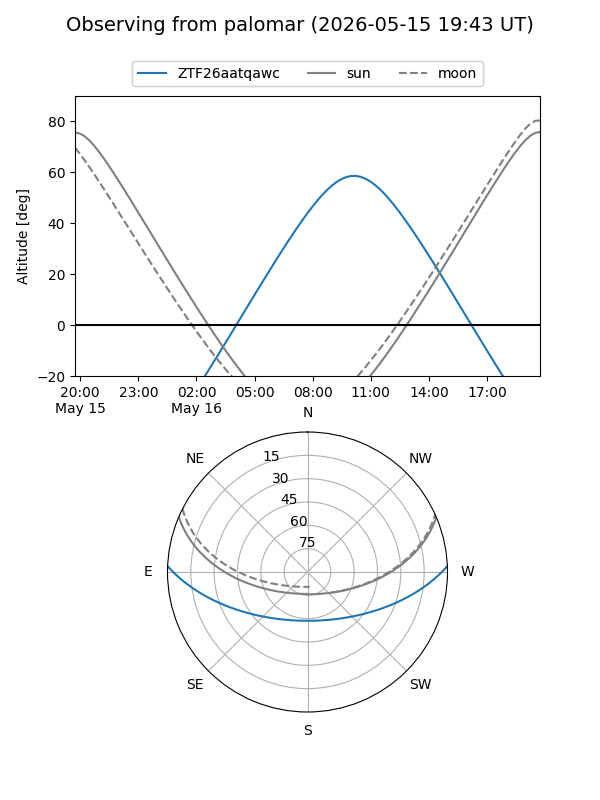

ZTF26aatqawc
Target ZTF26aatqawc at 2026-05-16 11:39
Aliases and brokers:
FINK: link
Lasair: link
ALeRCE: link
alt names
ZTF26aatqawc (ztf,fink_ztf)
Coordinates:
equatorial (ra, dec) = 268.7991,+1.99678
equatorial (HMS+DMS) = 17:55:11.78,+01:59:48.40
galactic (l, b) = (28.2320,+13.41335)
Flags:
Photometry:
last ztfg=20.44
1 ztfg detections
Lightcurve

Visibility


Additional plots